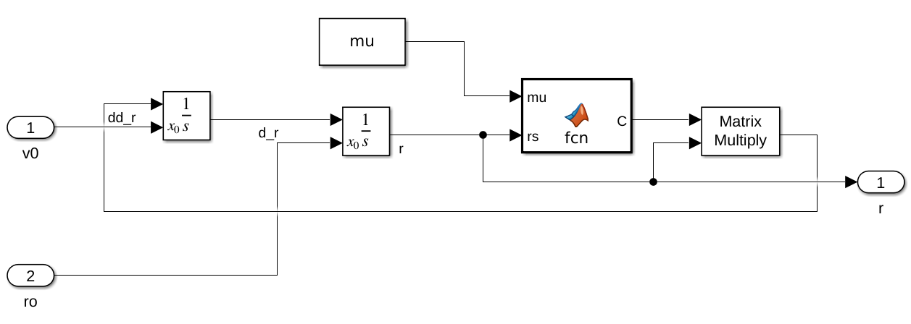
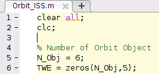
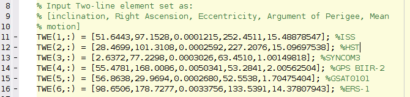

Kepler Orbit Simulation
Demo
Several satellites are orbiting around the earth using the input data of Two-line element sets.
Satellites include International Space Station, Hubble Space Telecsope, GPS, and so on.
These show kepler orbits including LEO, MEO, GEO and SSO.

Current Model
Govern equation of 2-Body system. The earth is assumed to be fixed

Steps to Run
- Set the number of orbiting objects in Orbit_ISS.m
 - Input the satellite's Two-line element data to determine the orbit
 - Run the code of Orbit_ISS.m.
MATLAB Project
This is the open download link of this project: Project Link
If you want to support me for doing this work, you can sponsor me by the following paypal link:
sponsor link.
Thank you. I really appreciate your support.
Feel free to cantact me if you want to collaborate with me on other interesting projects.